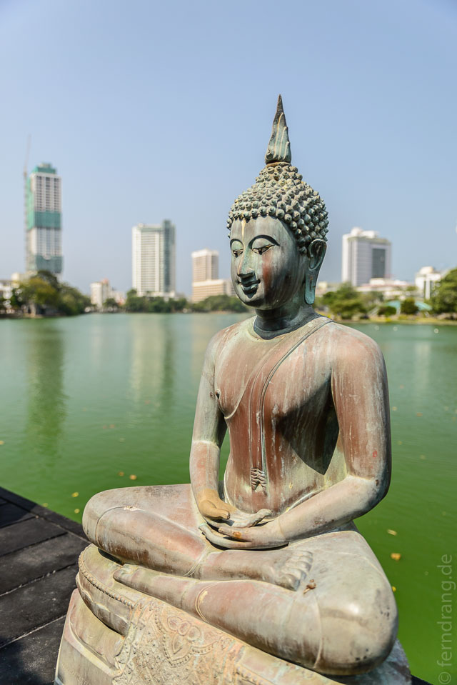
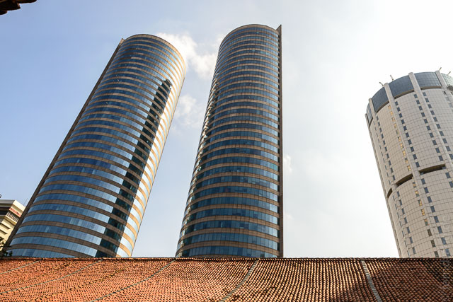
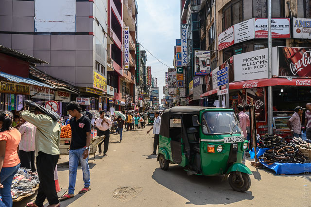
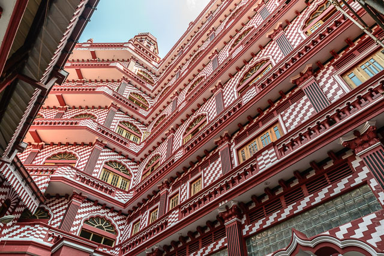
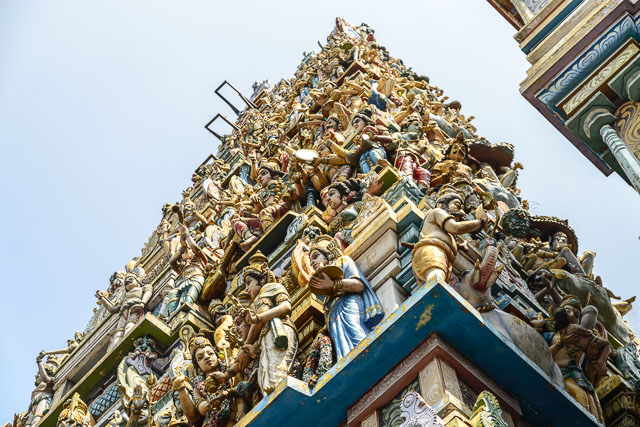
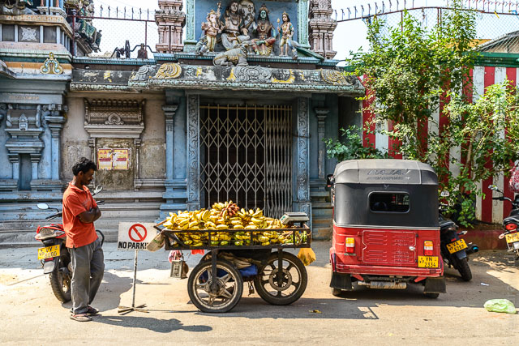
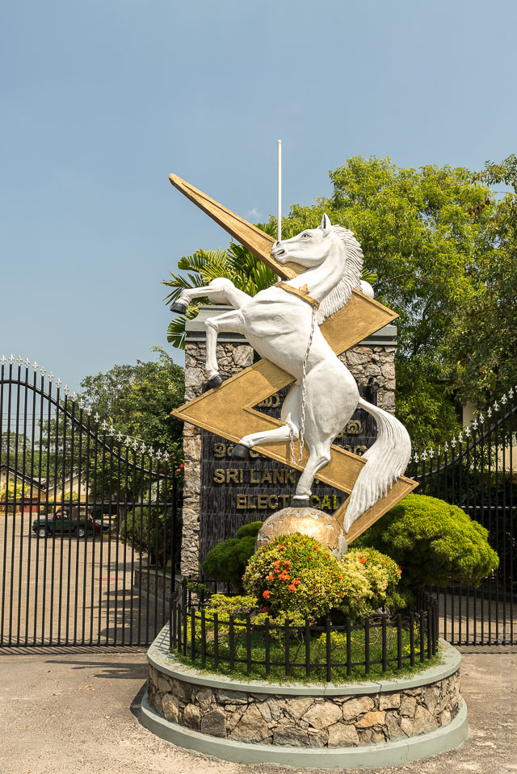
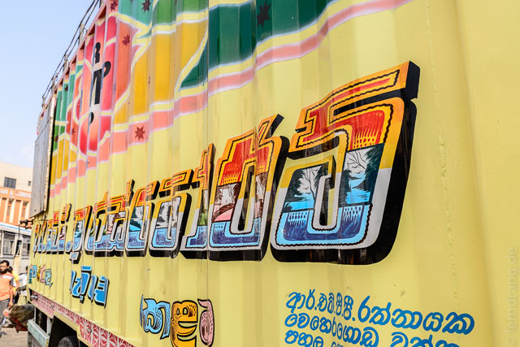

Der Zug nach Colombo hält auch in Ahangama und wir sind rechtzeitig kampfbereit am Bahnsteig in Stellung gegangen, um zwei Sitzplätze zu erobern. Zum ersten Mal sind wir in einen leeren Wagon gestürmt. Bei den folgenden Stopps an den Touristenbahnhöfen in Hikkaduwa und Bentota wurde es dann etwas voller, aber wir konnten bequem bis Colombo fahren. Dort überraschte uns der Hauptbahnhof am Tag nach der Wahl mit gähnender Leere, wo zwei Wochen zuvor noch tausende Menschen über die Bahnsteige drängelten.
Nach zähen Verhandlungen mit Rikschafahrern sind wir ins Botschaftsviertel gefahren. Dort lag unsere Unterkunft "Decoco Guesthouse", das sich als Bed&Breakfast bei einer japanischen Familie entpuppte. Die Gegend ist schick und weit abseits vom lauten und dreckigen Colombo. Die japanische Botschaft ist direkt gegenüber und in ein paar Minuten kann man zum Viharamahadevi Park gehen.
Abends sind wir ins schicke Gallery Cafe gegangen, um Alis Geburtstag zu feiern. Da der neue Präsident kurz vorher bei uns um die Ecke auf dem Independence Square eine Rede gehalten hat, war die ganze Gegend voll mit Polizeistreifen. Zwei Tage rund um die Wahl war im ganzen Land der Alkoholausschank verboten. Deshalb konnten wir nur mit Sprudelwasser anstoßen, aber das Essen war köstlich und nach vier Wochen Rice&Curry eine schöne Abwechslung.
Colombo ist sehr weitläufig und eigentlich nicht sonderlich gut als Fußgänger zu erkunden. Die Rikschafahrer sind hier auch hartnäckiger als im Rest des Landes - auch wenn es durch die Taxameter oft sehr billig ist. Es gibt viel zu sehen, aber nicht viel ist sehenswürdig. Die vermeintliche Uferpromenade Galle Face Green, ist zu einer großen Baustelle geworden. Hier erträumt sich die Stadt eine moderne Hochhaussiedlung im Stil von Singapur. Das ehrwürdige Galle Face Hotel war wegen Renovierung geschlossen. Das Fort ist seit einiger Zeit rund um den Präsidentenpalast weiträumig abgeschlossen. Die restlichen Straßen sind eine wilde Mischung aus heruntergekommenen Markthallen im Kolonialstil und hässlichen Hochhäusern. Dazwischen wurde das ehemalige holländische Hospital in einen schicken Shopping- und Restaurantkomplex umgebaut.
Nördlich vom Bahnhof liegt das wuselige Viertel Pettah, das frühere Herz von Colombo. Hier wähnt man sich fast in Indien, so viele Rikschas quetschen sich durch die überfüllten Straßen mit Süßigkeitenständen und Teestuben. Es ist erstaunlich, dass ein Land mit einem ethnischen Bürgerkrieg in der jüngeren Vergangenheit religiös derart durchmischt ist. In Pettah liegen Hindu-Tempel, alte, holländische und englische Kirchen und Moscheen nebeneinander. Besonders sehenswert ist die Rote Moschee, deren zahlreiche Türmchen die Nachbarhäuser überragt, und die mit ihrer rot-weiß karierten Fassade von Escher gestaltet sein könnte. Der Trubel der Straße dringt in die Säulengänge, wo sich die Männer für ein kurzes Gebet hinknien.
   Parallel zur Küste zieht sich südlich vom Fort die Galle Road, die geradeaus bis Galle und Matara führt. Dort zeigt sich Colombo fast amerikanisch mit vielen Shopping Malls, Geschäften und Restaurants. Der Glanz verfliegt aber bei näherem Hinsehen.
Am Abend hatten wir Probleme den schwarzen Dreck von den Füßen zu waschen. Wir durften das Zimmer netterweise bis Abends behalten, da unser Flug erst in der Nacht ging. Die Fahrt zum 30km entfernten Flughafen sollte bis zu anderthalb Stunden dauern, andere Reisende hatten von zwei gesprochen. Umso erstaunter waren wir, als wir über die dank Maut vollkommen leere Autobahn nach 30 Minuten dort waren. Das hat die Wartezeit unerträglich lang gemacht, zumal wir es kaum geschafft haben, in den Ramschläden unsere letzten Rupien auszugeben.
